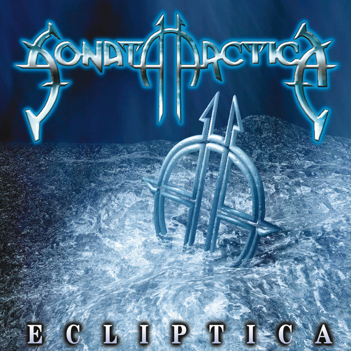

Sonata Arctica
Es una banda de Power Metal formada en el año 1996 en Kemi, Finlandia

Integrantes
- Tony Kakko
- Tommy Portimo
- Henrik Klingerberg
- Elias Viljanen
- Pasi Kauppinen
Son 10 discos
| Año | Disco |
|---|---|
| 1999 | Ecliptica |
| 2001 | Silence |
| 2003 | Winterheart's Guild |
| 2004 | Reckoning Night |
| 2007 | Unia |
| 2009 | The Days of Grays |
| 2012 | Stones Grow Her Name |
| 2014 | Pariah's Child |
| 2016 | The Ninth Hour |
| 2019 | Talviyo |
| Talviyo es el último disco | |